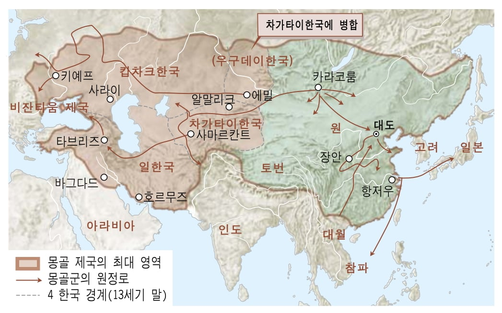
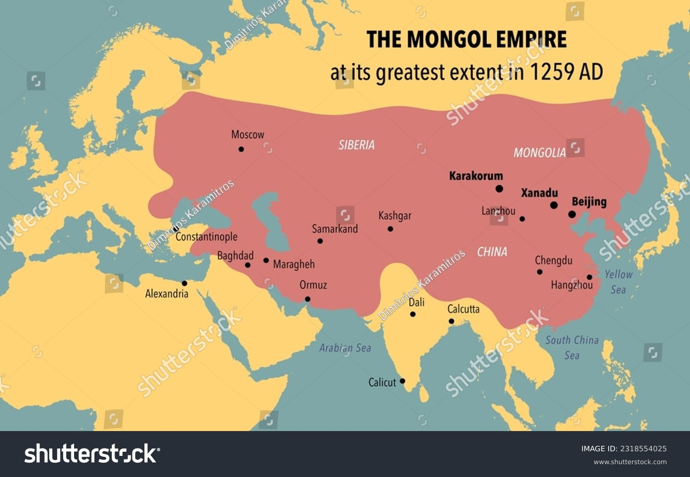
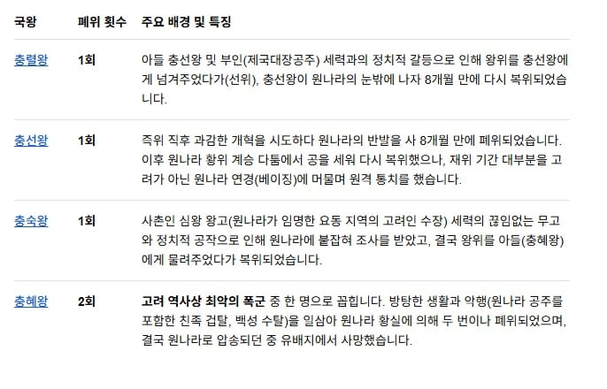

우리나라 역사 교과서를 보면 몽골 제국 최대 영역 하고 고려가 빠져있음

하지만 해외 이미지 보면 고려는 몽골제국의 영토로 되어있음
그도 그럴것이

몽골은 고려왕을 누구를 세울지 다 직접 결정했고
심지어 고려왕이 마음에 안들면 붙잡거나 소환시켜 마음대로 폐위시켰음
말로만 고려왕을 세운거지 사실상 고려왕 세우고 폐위하는걸 자기 맘대로 한거...
그냥 몽골제국 속국 그 자체였음

우리나라 역사 교과서를 보면 몽골 제국 최대 영역 하고 고려가 빠져있음

하지만 해외 이미지 보면 고려는 몽골제국의 영토로 되어있음
그도 그럴것이

몽골은 고려왕을 누구를 세울지 다 직접 결정했고
심지어 고려왕이 마음에 안들면 붙잡거나 소환시켜 마음대로 폐위시켰음
말로만 고려왕을 세운거지 사실상 고려왕 세우고 폐위하는걸 자기 맘대로 한거...
그냥 몽골제국 속국 그 자체였음
걍 예를 들지말고 설명해줘. 입성동책 사건이 정확히 뭔데?
고려를 원나라의 직속 영토로 만들어 독자적인 왕조 체제를 없애고 지방 정권으로 삼고자 한 사건
결론: 고려 왕실과 신하들의 반발로 실패함 원나라 세조 쿠빌라이가 약속했던 세조구제를 이유로 무산시킴
아니 진짜 속국 =식민지로 아는 저능아들이 이렇게 많다고?
부마국 ㅇㅈㄹ
그냥 속국이라고 불리기엔 정복한 다른 나라와 달라. 부마국이었어
부마국이지
고스트오브쓰시마 재미있게 했는데
나중에 생각해보니까 내가 사무라이(혹은 시노비) 가 되어 몽골군에 섞여있는 고려군을 도륙한거였음...
야 근데 니가 가져온 지도는 해외 사관에서 볼 때 고려가 속령으로 생각하는 관점이잖아. 속국과 속령은 엄연히 다르고 같은 영토 색으로 칠한 거는 엄연히 한 국가 영토 내에 있다는 거야.
속국은 제한적인 자주권을 행사하는 개념이라 별개의 카테고리로 봐야하는데 너는 원 간섭기(우리나라 역사 교과서 기준)에 고려가 속령으로 생각해서 해외 자료를 가져온 거임?
다만 속국은 맞음. 애초에 군권도 제한적이고 왕도 입맛대로 세우고 수탈도 하고 그러는데 그게 어떻게 자주국일 수가 있겠음?
불리한 댓글엔 뭐 제대로 반박도 못하고 그러는데 렉카면 렉카답게 그냥 어줍잖은 니 생각은 좀 버리고 가져와라
저 지도안에는 칸국도 다 포함되어 있음. 원나라 말고 칸국
그리고 칸국은 속령이 아님...
칸국이 몽골제국이라는 카테고리에 하나로 포함되어 있는데 칸국보다 더 몽골에 종속적이었던 고려가 빠질 이유가 있냐 이거지
이런 논란 있을 법한 건 역사학계 연구를 봐야지 뭔 지도 띡 올리고 속국이었음 ㅎㅎ 이러냐
사실상 속국이었으나 부마국이라는 허울로 어쨌든 속국은 아님이라 주장할 수 있다 상태 아님?
최소한 역사학자 의견이라도 가져다가 똥을 싸야지 그냥 인터넷에서 지도만 가져다가 올리면 그게 맞는말이되는거임?
독자연구네?
이새끼 글올리는거보면 무슨 재미로 사는지 모르겠네
이세돌보는 재미로 사나
근데 사실상 왕 폐위도 시킬정도면 속국이 맞지
뭐 부마국이라곤 하는데 결국 이것도 좀더 대우가 좋은 속국이니까
조공국이랑은 다른게 중국이랑 조공국은 중국이 왕을 정한건 아니니까
뭐 그렇긴한데 나름 대우받는편이었음 ㅋㅋ나름 고려라는 나라자체는 인정받는거였으니ㅋㅋ
그 누구냐 고려출신인데 명나라 왕비하던애 그 여자땜에 고려라는 이권이 확실히 나눠져서 관리됐었거든 그 왕비 친척들이 고려에서 이것저것 해처먹는다고 ㅋㅋㅋㅋ
논외로 명간섭기시절 딱하나 아쉬운건 원나라가 일본까지 점령하려고했는데 기상찐빠, 수송빡심땜에 2번시도했다가 포기한게아쉬움 ㅋㅋㅋ
이때 몽골기마병이 일본열도 질주한번해줬어야 재밋었을텐데 ㅋㅋㅋㅋㅋ
속국이 맞다. 아니다. 이걸 결론을 내려면, 일단 속국이라는 단어에 대해 정확한 정의를 먼저 내려야지.
근데 그게 안 될걸? 속국이라는 명칭은 학계에서도 합의된 정의가 없으니까.
그럴 때는 그냥, 두 국가의 관계를 정확히 풀어서 서술하는 게 맞다고 봄.
베네수엘라는 미국 속국이냐
나는 정복당했으니 속국이 맞다고 생각하긴함 미국가서 지도같은거 볼때 우리나라 교과서랑 달라서 시각이 좀 환기되긴하더라
속국이냐 아니냐 예 아니요로 한다면 속국이 맞음
다만 원나라의 일부였다 혹은 중국의 지방정부였다였냐면 그건 아님
속국중에서는 그나마 국호도 유지하고 행정체계 이런게 원나라가 자율성을 많이 준편이긴함
걍 속국, 부마국의 성격을 같이가진다고 봐도 상관없는데.
대신 속국이라기엔 쿠빌라이 핏줄이 공민왕대까지 쭉 혼인으로 이어진 지속성이 있었다는게 다른국가들이랑 구별됨.
정치적 간섭을 받긴 하지만 세조구제로 간섭 막아내는것도 보면 마냥 속국이라고 하기엔 고려의 지위가 상당해서 걍 둘다 가지고 있다하는게 편함.
뭔가 속국 이러면 중국에 지배당하는것 같아서 기분나쁠 수 있는데 한족들은 이미 몽골에 지배당해서 차별받고 있으니 자존심 안상해도됨
일제강점기를 예로 들면
친일파가 조선을 완전 일본에 병합하려고 하다가 실패한 사건을 말함
즉 경술국치가 없는 상태면 이게 일본이야 조선이야?